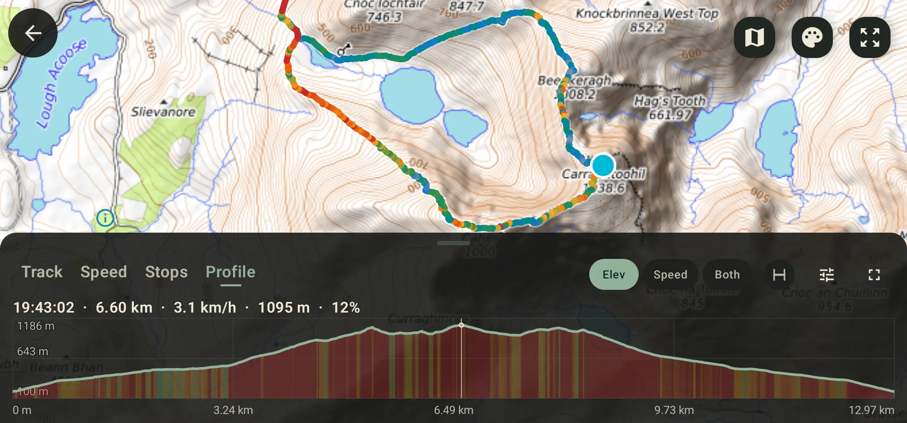
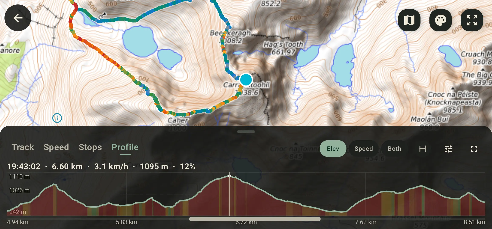
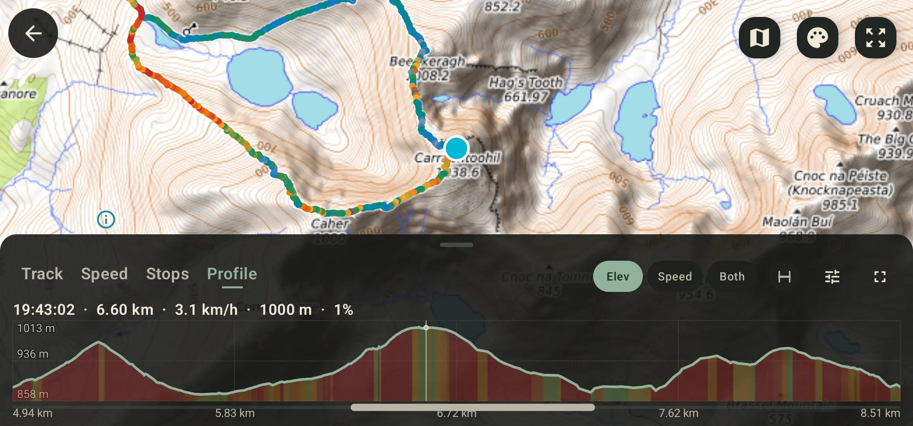

Sources d'altitude
Altitude GPS sur Android : altitude enregistrée ou données de terrain ?
Ce guide vient d'un parcours réel dont le dénivelé semblait beaucoup moins fiable que la trace elle-même. Le conseil habituel est de « corriger » l'altitude avec des données de terrain — mais cela suppose que l'altitude du sol est la vérité, et sur un pont, dans un tunnel ou en télésiège elle ne l'est pas. La vraie question est : laquelle des deux décrit votre sortie ? GPS Logger y répond en vous laissant basculer de l'une à l'autre, sans rien réécrire.

Pourquoi l'altitude GPS est imprécise
Un téléphone est bien plus précis à l'horizontale qu'à la verticale. Géométrie satellitaire, couvert forestier, bâtiments, météo et bruit des capteurs font sauter l'altitude. Le baromètre aide, mais un changement de pression peut faire dériver une trace vers le haut en un après-midi alors que vous n'avez pas bougé en altitude.
C'est gênant parce que le dénivelé s'accumule. De petites montées fictives, répétées sur des milliers de points, transforment un trajet plat en étape de montagne. Une bonne application lisse le profil et ignore les variations sous le seuil de bruit avant d'ajouter quoi que ce soit — GPS Logger le fait, d'où un chiffre plus bas et plus stable qu'une somme brute des montées.
Deux altitudes différentes, pas une vraie et une fausse
L'altitude enregistrée est celle fournie avec la trace : baromètre ou GPS du téléphone, ou montre et appareil ayant enregistré un fichier importé. Elle sait que vous étiez sur un pont, dans un tunnel, au quatrième étage ou en avion — et elle dérive avec la météo.
L'altitude du terrain est celle du sol à chaque coordonnée, lue dans un modèle d'élévation mondial. Insensible à la météo, elle se répète exactement sur un même parcours : deux enregistrements de votre boucle habituelle finissent enfin par concorder. En échange elle aplatit tout ce qui est au-dessus ou en dessous du sol : un pont au-dessus d'une vallée se lit comme le fond de la vallée.
Laquelle croire ?
Prenez celle qui correspond à la sortie que vous avez réellement faite.
Le terrain se lit généralement mieux quand
- le profil enregistré présente des pics impossibles ou des chutes brutales.
- une marche plate annonce beaucoup trop de dénivelé.
- plusieurs enregistrements du même parcours ne s'accordent pas.
- un GPX importé a des altitudes manquantes, plates ou clairement mauvaises.
- vous marchez, courez, roulez ou conduisez au ras du sol.
L'altitude enregistrée est la meilleure réponse quand
- le parcours franchit ponts, viaducs ou voies surélevées.
- il passe par des tunnels, des passages souterrains ou sous terre.
- vous étiez en télésiège, en téléphérique, en ferry ou en avion.
- la sortie est montée dans un bâtiment, une tour ou un parking à étages.
- votre téléphone a un baromètre, la météo était stable et la courbe paraît déjà cohérente.
Les données de terrain ont aussi une résolution
L’altitude du terrain est plus stable qu’un baromètre, ce qui ne la rend pas plus exacte. Elle est lue dans un modèle mondial sur une grille fixe : dans GPS Logger, chaque échantillon couvre environ douze mètres de sol aux latitudes irlandaises, et le modèle sous-jacent est lissé davantage encore. Tout ce qui est plus étroit que la grille est moyenné avant que vous ne le voyiez — et un sommet est précisément cela : un cône plus étroit que la cellule qui le contient.
Le parcours ci-dessus passe par le Carrauntoohil, point culminant de l’Irlande, que la carte donne à 1038,6 m. À la même seconde sur la même trace :
- Enregistrée : 1095 m, soit environ 56 m au-dessus — le baromètre était haut ce soir-là.
- Terrain : 1000 m, soit environ 39 m en dessous — le cône du sommet aplati par la grille.
Aucune des deux n’est la montagne. C’est l’état réel de l’altitude sur un téléphone, et c’est pourquoi l’application propose un commutateur plutôt qu’une correction : pour un parcours au ras du sol, le terrain est le meilleur point de départ, mais ce n’est pas une vérité à restaurer, et sur un pic aigu il lira bas.


Rien n'est écrasé
Les versions précédentes de GPS Logger proposaient une correction d'altitude destructive qui remplaçait l'altitude d'une trace par les valeurs du terrain, ainsi qu'un traitement par lots pour toute la bibliothèque. Les deux ont disparu. À la place, un simple commutateur d'affichage, trace par trace :
- Passer sur Terrain redessine le profil et recalcule le dénivelé à l'écran.
- L'enregistrement conserve toujours sa propre altitude.
- Les exports GPX et KML portent toujours l'altitude enregistrée, quelle que soit la vue affichée.
- Vous pouvez basculer autant que vous voulez : il n'y a rien à annuler.
Si une de ces anciennes versions a corrigé une trace, son altitude d'origine est réellement perdue — et l'application le dit, au lieu de faire semblant qu'un retour est possible.
Changer de source d'altitude dans GPS Logger
- Enregistrez un parcours ou importez un GPX.
- Ouvrez la trace depuis l'historique.
- Ouvrez la vue Profil, qui trace l'altitude, la vitesse ou les deux.
- Dans les options du graphique, réglez Source d'altitude sur Terrain. La première fois, l'application a besoin d'une connexion pour lire les altitudes du sol le long du parcours.
- Comparez la forme du profil et le dénivelé avec Enregistrée, et gardez celle qui décrit la sortie.
Lire l'altitude du terrain est gratuit pour une trace par jour ; Pro bascule n'importe quelle trace, à tout moment. Dans les deux cas c'est par trace : un parcours que vous ne regardez jamais ne coûte aucune requête.
Confidentialité et export
GPS Logger reste local : vos parcours restent sur l'appareil sauf si vous les exportez, partagez votre position en direct ou utilisez une fonction qui envoie clairement des données. La lecture de l'altitude du terrain interroge les altitudes du sol de la zone couverte par la trace, sans compte ni envoi de GPX.
Comme l'enregistrement n'est jamais réécrit, l'export reste honnête lui aussi : le GPX ou le KML porte l'altitude réellement enregistrée par votre appareil.